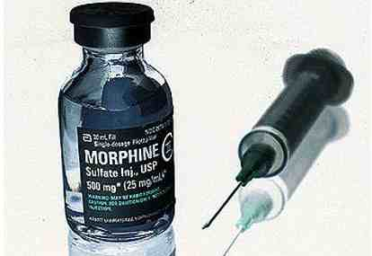
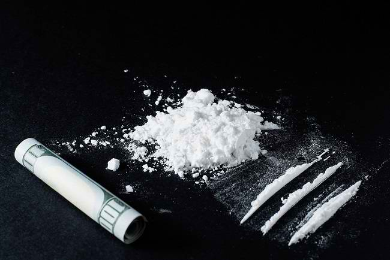
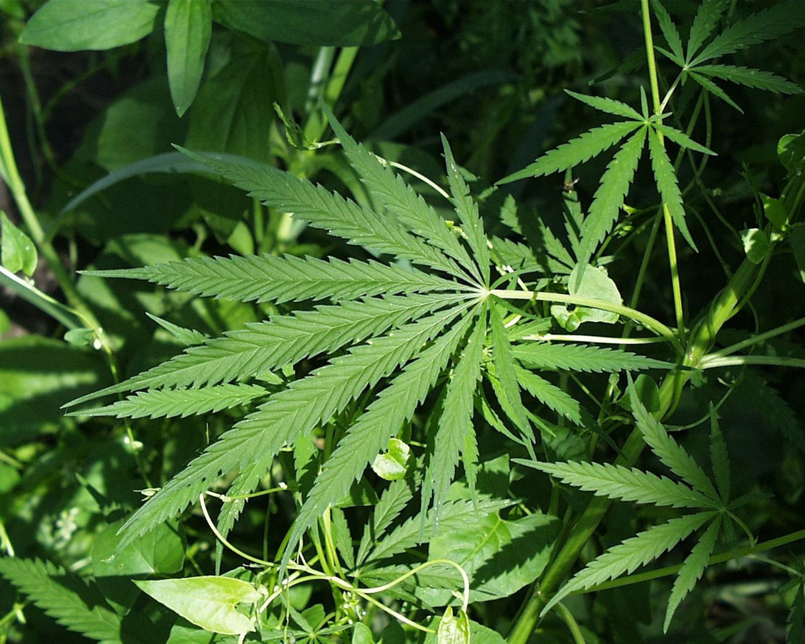
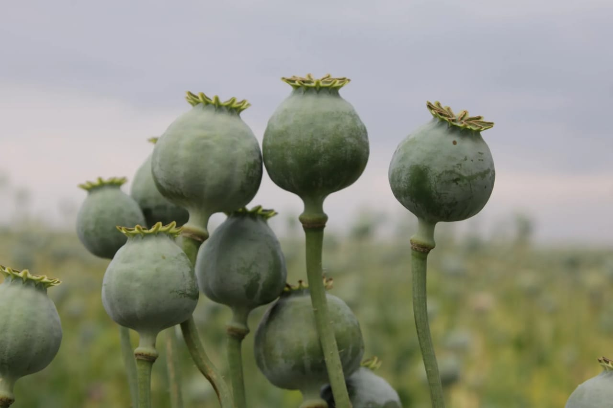
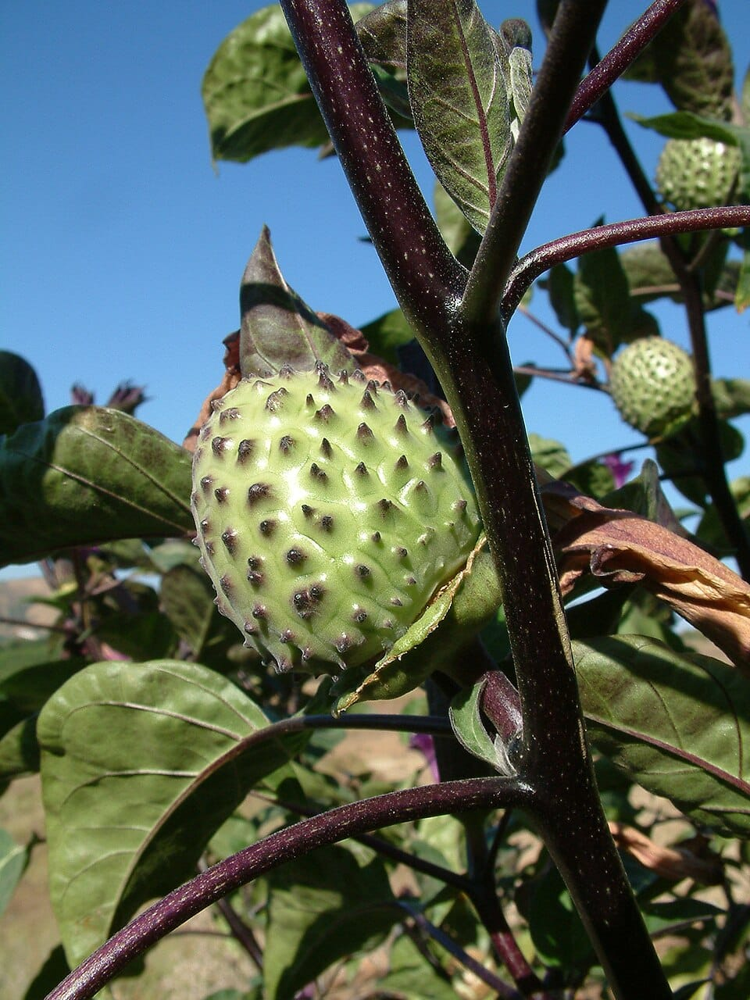

| Nama | Gambar | Penjelasan | Gejala Fisik | Efek |
|---|---|---|---|---|
| 1. Morfin |  |
Morfin berasal dari kata morpheus (dewa mimpi) adalah alkaloid analgesik yang sangat kuat, yang ditemukan pada opium. Zat ini bekerja langsung pada sistem saraf pusat sebagai penghilang rasa sakit. Cara penggunaan dengan disuntikkan ke otot atau pembuluh darah. |
|
|
| 2. Heroin/Putaw |  |
Heroin dihasilkan dari pengolahan morfin secara kimiawi. Akan tetapi, reaksi yang di timbulkan heroin menjadi lebih kuat dari pada morfin itu sendiri sehingga mengakibatkan zat ini sangat mudah menembus ke dalam otak. Cara penggunaan dengan disuntikan ke anggota tubuh atau dihisap. |
|
|
| 3.Ganja/Kanabis/Mariyuana |  |
Ganja adalah tumbuhan budidaya yang menghasilkan serat dan kandungan zat narkotika terdapat pada bijinya. Ganja merupakan salah satu jenis narkotika yang dapat mengakibatkan kecanduan berlebih. Cara penggunaannya dengan cara dipadatkan menyerupai rokok, dihisap, atau dimasukkan ke dalam makanan. |
|
|
| 4. Opium |  |
Opium adalah zat yang diperoleh dari getah tanaman poppy yang memiliki efek analgesik dan menenangkan. Penggunaannya biasanya dengan cara dihisap atau diolah menjadi bentuk lain seperti morfin dan heroin. |
|
|
| 5. Kecubung |
 |
Buah kecubung adalah bagian dari tanaman Datura metel, yang dikenal dengan bunga-bunga indah dan bentuk buahnya yang unik. Tanaman ini mengandung senyawa alkaloid seperti atropin, skopolamin, dan hyoscyamin, yang memiliki efek psikoaktif. Karena efek inilah, buah kecubung sering disalahgunakan untuk tujuan rekreasional. |
|
|